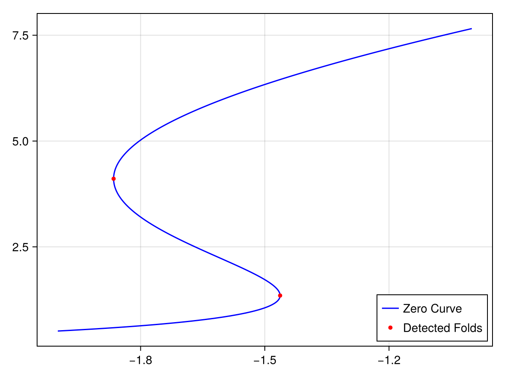

Basic Example
This is a basic example of computing and plotting a continuation curve using PALC.
using SimpleContinuation
using DifferentiationInterface
using Parameters
using FastClosures
using ForwardDiff: ForwardDiff
using CairoMakie
function TMvf(F, z, E0)
par_tm = (α=1.5, τ=0.013, J=3.07, E0=-2.0, τD=0.200, U0=0.3, τF=1.5, τS=0.007)
@unpack J, α, τ, τD, τF, U0 = par_tm
E, x, u = z
SS0 = J * u * x * E + E0
SS1 = α * log(1.0 + exp(SS0 / α))
F[1] = (-E + SS1) / τ
F[2] = (1.0 - x) / τD - u * x * E
F[3] = (U0 - u) / τF + U0 * (1.0 - u) * E
return nothing
end
function TMvf(du, zE0)
n = length(zE0) - 1
z = view(zE0, 1:n)
E0 = zE0[end]
return TMvf(du, z, E0)
end
# Utility function
function fill_vec!(zE0, z, E0)
zE0[1:3] .= z
zE0[4] = E0
return zE0
end
# Create Jacobians
J_cache = prepare_jacobian(TMvf, zeros(3), AutoForwardDiff(), zeros(4))
zE0 = zeros(4)
J = @closure (J, F, z, E0) ->
jacobian!(TMvf, F, J, J_cache, AutoForwardDiff(), fill_vec!(zE0, z, E0))
Jz(J, F, z, E0) = jacobian!((y, x) -> TMvf(y, x, E0), F, J, AutoForwardDiff(), z)
# create a termination callback
cb_term_fun(u, λ) = λ + 1
cb_term = TerminateContinuationCallback(cb_term_fun)
# Form Problem
cont_prob = ContinuationProblem(
ContinuationFunction{Val{true}}(TMvf, Jz, J),
[0.238616, 0.982747, 0.367876], # u0
-2.0, # λ0
(-4.0, -0.9), #(λmin, λmax)
)
# perform continuation
cache = continuation(
cont_prob,
PALC(; inner_prod=BifurcationKitInnerProduct());
initial_tangent=SecantInitialTangent(),
detection_callback = FoldBifurcationDetectionCallback(),
term_callback = cb_term,
dsmax=0.01,
)
# plot result
fig = Figure()
ax = Axis(fig[1, 1])
λs = map(i -> cache.br[i][2], 1:length(cache.br))
Es = map(i -> cache.br[i][1][1], 1:length(cache.br))
λs_det = map(i->cache.detected_points[i][2], 1:length(cache.detected_points))
Es_det = map(i -> cache.detected_points[i][1][1], 1:length(cache.detected_points))
lines!(ax, λs, Es; color=:blue, label="Zero Curve")
scatter!(ax, λs_det, Es_det; color=:red, markersize=7, label="Detected Folds")
axislegend(ax;position=:rb)
fig